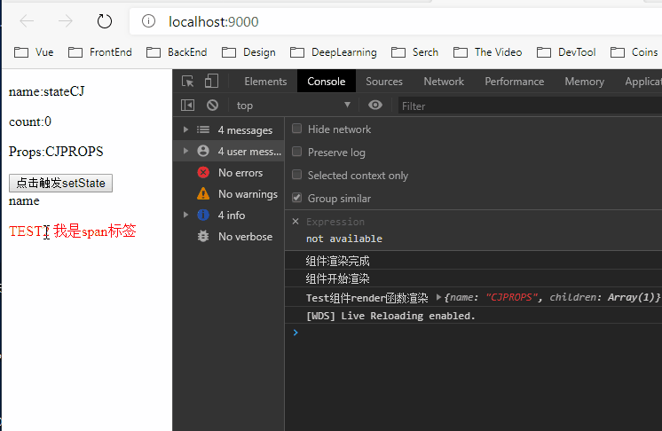

前言
本次仅针对React 15.8之前的代码原理解析说明，忽略fiber，事务机制，时间分片等底层操作，仅根据原理实现react基础的核心思想
React原理分析
JSX:
react中所有的类似html代码到最终都会被babel编译为createElement的形式,createElement实现。
<div>
<a>
target
</a>
</div>
使用babel编译后:
React.createElement("div", null, React.createElement("a", null, "target"));
组件:
在React中，组件分为两种，即函数组件和类组件。 我们来看看函数式组件，babel会编译成什么样子
function test(){
let name="CJ";
return(
<div>
{name}
</div>
)
}
babel编译后：
"use strict";
function test() {
var name = "CJ";
return React.createElement("div", null, name);
}
//这样就能很好的解释为什么return内含的变量和函数能够被渲染和执行
我们来看看更复杂的函数组件，含有map遍历和传递参数
function test(){
let name="CJ";
return(
[1,2,3,4,5].map((item,idx)=>
<div name={name}>
{name}
</div>
)
)
}
babel编译后：
"use strict";
function test() {
var name = "CJ";
return [1, 2, 3, 4, 5].map(function (item, idx) {//循环渲染五个div
return React.createElement("div", {
name: name//节点props
}, name/*子节点的内容*/);
});
}
看看比较复杂的类组件
class Test extends React.Component{
constructor(props){//es6 接收参数
super(props);
console.log(this.props);//{name:'CJ'}
this.state={
name:'CJ'
}
}
render(){
return(//编译为createElement渲染
<div>
{this.state.name}
</div>
)
}
}
ReactDOM.render(
<Test name='CJ'/>,//渲染改类的render函数，等同于new Test({name:'CJ'}).render()
document.getElementById('example')
);
//等同于
ReactDOM.render(
new Test({name:'CJ'}).render(),//渲染时调用实例化后该函数的render方法
document.getElementById('example');
);
函数组件就比较简单了
function Test (props){
let name="CJ";
return (
<div>
{props.name}
</div>
)
}
ReactDOM.render(
<Test name="CJ"/>,//直接运行函数即可渲染
document.getElementById('example')
);
//等同于
ReactDOM.render(
Test({name:'CJ'}),
document.getElementById('example')
);
可以看出，无论是函数组件，还是类组件，返回的都是React.createElement的格式，第一个参数可以是多个类型,可以是指向虚拟DOM的变量，也可以是一个类组件
var El=<div>123</div>;
//babel:转换后
var El = React.createElement("div", null, "item");
var Ell = React.createElement(El, null, "123");
手写React
基于上面这些特性，我们就能写出一个拥有上述功能的的react。
文件描述
使用webpack(ESModul语法)构建,自行手动搭建好webpack运行环境。
react 文件夹
- index.js //import入口文件，提供React基础API,React.render,React.Component,React.createElement
- addEvent.js //实现事件委托功能，使用发布订阅在节点DOM还没渲染时给未渲染的DOM原生绑定事件
- Component.js //类组件的父类,实现state,setState，接收props
- createElement.js //将craeteElement创建的节点映射为type,children格式的可递归的JS对象，通过递归渲染DOM原生.
- createReactUnit.js //核心文件，渲染React的各种组件，类组件，函数组件，以及数字和字符串
- webpack入口文件
import React from './src/react';//导入自己的react文件夹入口文件
var functionTest =function(){
var name='FunctionTEST name'
return React.createElement("div", {
name: name
}, React.createElement("p", {},name));
}
//调用自己的React对象下的基础方法渲染节点
let TestNode = React.createElement("div", {
name: "CJ",
}, 'name',
React.createElement("p",null,name),
React.createElement("p", {style:'color:red'}, "TEST2",
React.createElement('span', {
name: 'spanCJ',
onclick:()=>{alert(1)}
}, '我是span标签')));
//渲染类组件
class TestClass extends React.Component{
constructor(props){
super(props);
this.state={
name:'stateCJ',
userList:[{name:'CJ',age:23},{name:'CJ2'}],
count:0,
}
}
componentWillDidmount(){
console.log('组件渲染完成')
}
componentWillMount(){
console.log('组件开始渲染')
}
handleChangeState(){
this.setState({
name:'StateChangeCJ',
count:this.state.count+1
})
}
render(){
console.log('Test组件render函数渲染',this.props);
return React.createElement("div", {
name: name
}, React.createElement("p", null,this.state.name),
React.createElement("p", null,this.state.count),
React.createElement("p", null,`Props:${this.props.name}`),
React.createElement('input',{value:'点击触发setState',type:'button',onclick:()=>{this.handleChangeState()}}),
React.createElement(TestNode)//类组件内渲染虚拟DOM对象
);
}
}
//入口组件，渲染TestClass,babel打包前就是(<TestClass name="CJPROPS"/>)
const App=React.createElement(TestClass, {
name: "CJPROPS"
},null);
//调用我们自己写的React的render方法
React.render(App, document.querySelector('#app'));
看完上述的组件代码，懂一点React的都应该能直到运行的结果是什么了吧，展示this.state对象内的name和count，点击按钮触发事件执行this.setState()去触发视图更新，每次点击count+1,以及修改name的值，并且在组件执行的生命周期执行各自的方法打印对应的值。我们来实现一下和react相同语法的功能。
- index.js(react入口文件)
import createElement from './createElement';
import Component from './Component';
import createReactUnit from './createReactUnit';
let React={//组装React对象，挂载对应方法和属性
Component:Component,
createElement:createElement,
nextRootIndex:0,
//事件委托，为每一个节点赋值一个唯一的节点标记的起始值，委托给documeny.body
render:(element,el)=>{//render函数,传递组件和挂载的节点
let createReactUnitInstance=createReactUnit(element,el);
//创建react单元实例
let markUp=createReactUnitInstance.getMarkUp(React.nextRootIndex);
//获取到单元实例上渲染的元素
el.innerHTML=markUp;//挂载元素
}
}
export default React;
- createReactUnit.js 重头戏，根据传递的对象类型渲染对应的组件或者字符,执行生命周期函数，render的第一个参数可能是类组件，也可能是函数组件，也可能是数字或者字符串，根据传递的对象进行判断。
import addEvent from './addEvent';
class ReactUnit {
//React节点的祖先类，传递一个element对象，为每个继承自该组件的子类自动添加element对象
constructor(element) {
this.element = element;
}
}
class ReactTextUnit extends ReactUnit {//渲染数字或者字符串节点,没什么可讲的
//省略constructor，es6类组件默认执行父类的constructor
getMarkUp(rootId) {
this._rootId = rootId;
let markUp = `<span data-react-id=${this._rootId}>${this.element}</span>`;
return markUp;
}
}
class ReactNativeUnit extends ReactUnit {
//省略constructor，es6类组件默认执行父类的constructor
//渲染虚拟DOM对象
getMarkUp(rootId) {
this._rootId = rootId;
//获取根节点，为每个子节点添加序号，保证节点的序列号唯一性
let {
type,
props
} = this.element;
//该element是createElement返回的对象，格式
// {type:'div',props:{name:'CJ',childrend:[]}}，使用原生react打印下节点试试
//获取到节点的type，可以为div,p或者类或者函数
//props为节点传递的参数,如{click:xxx}
let attrsString = '',
content = '';//初始化props和content，转换string输出
if (props) {
for (let key in props) {
if (key !== 'children') {
//遍历非子节点，设置props属性，即dom的attributes
switch (key) {
//仅渲染点击事件，有时间添加其他事件
case 'onclick':
//用事件委托预添加事件，此时DOM并没有生成，所以无法添加事件
//传递唯一的索引rootId，事件类型和需要触发的事件
//使用事件委托也大大提高的浏览器的性能
addEvent(`${this._rootId}`,key,props[key])
break;
default:
//否则就是普通的props，直接渲染attributes
attrsString += (key + '=' + props[key] + ' ');
break;
}
} else {//如果props中有children，就是子节点属性
props.children.forEach((element, idx) => {
//遍历子节点，循环拼接html属性
if (typeof element === 'string'||typeof element === 'number') {
//简单类型直接渲染
content += element;
} else {
if(typeof element.type==='object'){
//发现该节点类型为虚拟DOMM赋值给变量类型
content += new ReactNativeUnit(element.type).getMarkUp(`${this._rootId}.${idx}`);
//childrend的子项type为虚拟节点变量时，
//再次递归调用渲染虚拟节点的方法渲染element.type，返回渲染后的html元素
//并传递唯一的rootId，在原基础上加上自己的循环索引
}else{
content += new ReactNativeUnit(element).getMarkUp(`${this._rootId}.${idx}`);
//否则就时普通的节点，如数字或者字符串，递归渲染element
}
}
});
}
}
}
//开始标签和attributes
let startTag = `<${type} react-unid=${this._rootId} ${attrsString}>`;
let endTag = `</${type}>`;//结束标签
//content为递归渲染所有子节点后的文本内容
return `${startTag} ${content} ${endTag}`
}
}
class ReactClassUnit extends ReactUnit{
//省略constructor，es6类组件默认执行父类的constructor
//渲染react类组件
getMarkUp(rootId){
this._rootId=rootId;
//同理，渲染唯一的reactunid
let reactInstance=new this.element.type(this.element.props);
//实例化类实例
reactInstance.componentWillDidmount&&reactInstance.componentWillDidmount();
//执行生命周期钩子,实例化后到渲染前期间
let markup;
this.element.type.prototype.forchUpdates=()=>{
let el=reactInstance.render();
//执行执行实例化后的render()函数返回的createElement对象
let reactClassUnitInstance= createReactUnit(el);
//创建react单元函数，根据reactElemenet返回的对象调用对应的React单元
//判断是函数组件还是类组件和虚拟DOM
markup=reactClassUnitInstance.getMarkUp(rootId);
//reactClassUnitInstance.getmarkup返回渲染的innerhtml元素
reactInstance.el.innerHTML=markup;//渲染到节点上去
return markup
}
//对象原型上添加forceUpdates方法，强制视图刷新，即再次调用实例化后的render()函数
reactInstance.forchUpdates();
reactInstance.componentWillMount&&reactInstance.componentWillMount();
//渲染完执行生命周期钩子
return markup；
}
}
function createReactUnit(el,el2) { //创建React单元对象
let type = typeof el;
if (type === 'string' || type === 'number') {//进渲染变量
return new ReactTextUnit(el);
}
if(type==='object'&& typeof el.type==='function'){//类组件
el.type.prototype.el=el2;
return new ReactClassUnit(el);
}
if (type === 'object'&& typeof el.type==='string') {//渲染虚拟DOM
return new ReactNativeUnit(el);
}
}
export default createReactUnit;
- addEvent.js:简单的事件委托机制
let observe=new Observe();//实例化一个发布订阅模式
export default function addEvent(reactUnid, type, fn) {
//给发布订阅添加一个发布
observe.push(reactUnid,fn)
document.body[type] = function (event) {
//事件委托给全局的body对象，根据target的触发源去判定有没有事件执行
//其他事件类型同理
let enUnid=event.target.getAttribute('react-unid');
//得到触发源的react-unid
observe.isPublish(enUnid)&&observe.fireSingle(enUnid);
//在发布订阅中查看是否有订阅，有的话就执行该方法
}
}
class Observe{
constructor(){
this.fnCenter={};//实例化发布订阅存储器
}
push(name,fn){
this.fnCenter[name]=fn;
//添加事件和key，使用对象确保唯一性
}
isPublish(name){
return this.fnCenter[name]//返回是否有订阅者
}
fireSingle(name){//触发订阅者
for (const key in this.fnCenter) {
if (this.fnCenter.hasOwnProperty(key)) {
if(key===name){
this.fnCenter[key]&&this.fnCenter[key]();
}
}
}
}
fireAll(){//触发所有订阅者
for (const key in this.fnCenter) {
if (this.fnCenter.hasOwnProperty(key)) {
const element = this.fnCenter[key];
element&&element();
}
}
}
}
- createElement.js
class Element{
constructor(type,props){
this.type=type;
this.props=props;
}
}
export default function(tag,attrs,...children){
//就是把createElement形式的元素变换为{type,props}格式,props内放置children
//方便各种reactUnit递归遍历
let props =attrs || {};
props.children=children;
return new Element(tag,props);
}
- Component.js 提供一些基本的功能，如接收props，setState重新渲染等
export default class{
constructor(props){//传给子类接收props
this.props=props;
this.state={};//初始化子类state
}
setState(patch){
this.state={//合并state
...this.state,
...patch
}
console.log('重置状态')
this.forchUpdates();//更新最新的状态
}
}
实现效果预览
实现出来还是很自豪的，前端路上又艰难的前进了一小步 